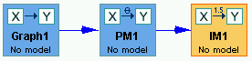

Inside the Instantiated Model Box |
An Instantiated Model box in the main workspace looks like this:

In the standard setup, an IM box takes as parent a PM box, but instantiated models can generated in other ways as well, such as from estimators or updaters. See Bayes Instantiated Model, Dirichlet Bayes Instantiated Model, or SEM instantiated Model for details.